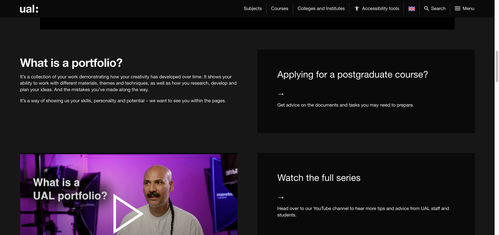
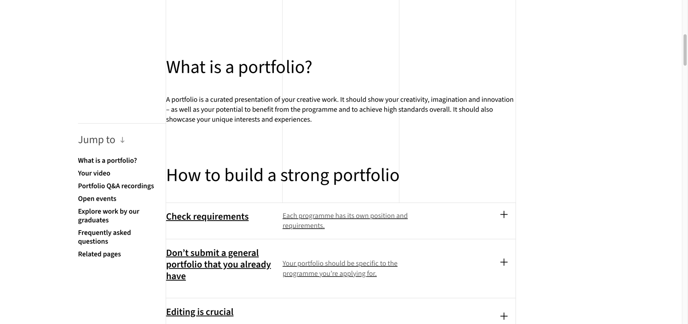
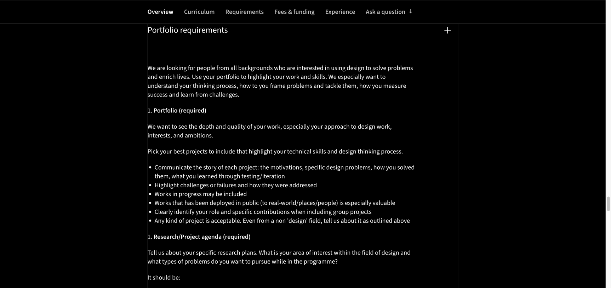
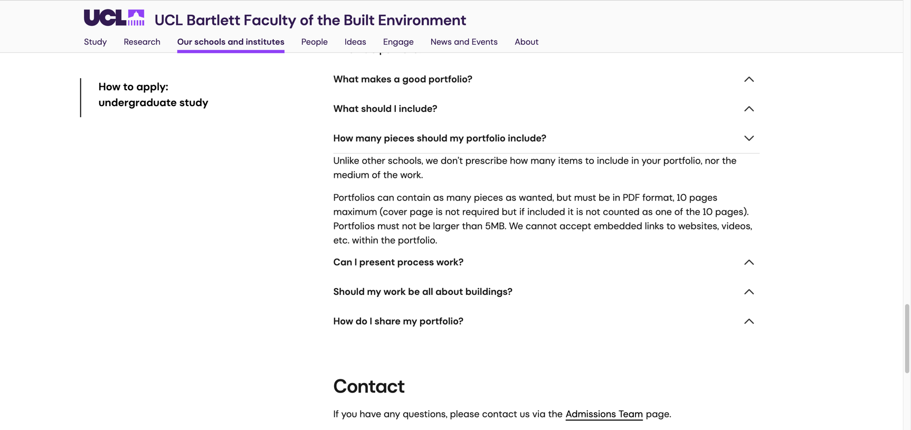
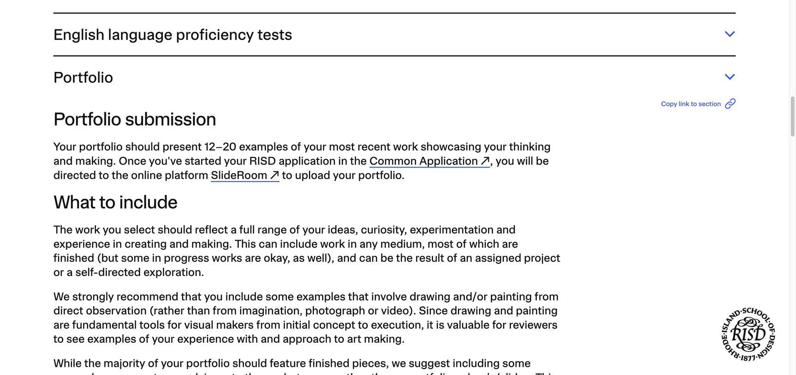
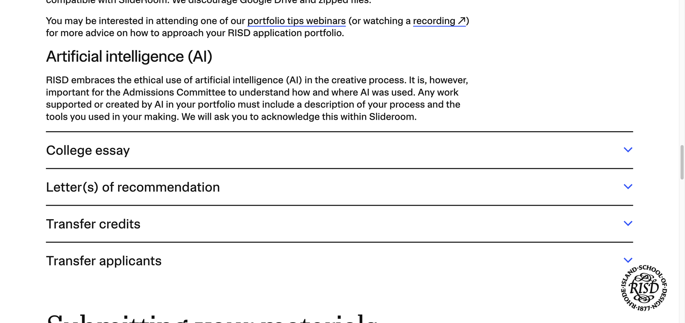

我把中文搜索结果前排的作品集文章对了一遍。最常见的写法很省事，先给出四至六个项目，再给一个二十至三十页的区间，随后告诉学生多放过程。读完像拿到了一套答案，真正打开院校官网，数字很快就对不上了。
UCL Bartlett本科数字作品集目前最多十页，文件不能超过5MB。RISD 2027本科申请要求十二至二十件近期作品。RCA Design Products没有在页面上给统一页数，它把注意力放在问题怎样提出、测试如何展开、失败以后改了什么。UAL写得更直接，学校想看到创意怎样发展，也想看到中间犯过的错。
这篇核对的是2026年8月25日仍可访问的院校页面。提交前请再打开具体课程页面检查一次。学校、专业和申请层级一变，要求也可能跟着变。
先把万能页数放到一边
作品集要求至少有三层。学校先讲它重视什么，课程再写自己要看什么，提交系统最后规定文件怎样上传。很多经验文章只讲第一层，读者便容易把一套通用作品集投给所有学校。
页数也不能单独看。UCL允许在十页里放多件作品，封面不计入十页，文件还要压到5MB。RISD按上传的作品数量来算，每件作品可以有补充角度，但单页塞得太满会影响查看。RCA更像一次编辑任务，你需要为所申请的专业重新选择项目，讲清自己在团队里的具体工作。
UAL想看创意怎样长出来
UAL的公开建议把作品集解释成一段持续发展的记录。材料、主题和技法都可以变化，研究、计划和错误也属于这段记录。这里有个容易被忽略的词，potential。评审在判断申请人进入课程以后还能走多远。

这会改变项目的写法。一个完成度很高的海报，只放最终成品，评审很难看出申请人怎样取舍。把最初的方向、一次不成立的实验和后来保留下来的决定放在相邻页面，潜力才有了证据。过程页需要回答问题，草图数量多并不会自动增加说服力。
RCA要求你为具体专业重新编辑
RCA的通用建议更新于2026年3月。学校先提醒申请人检查课程要求，随后明确写着不要提交手头那份通用作品集。作品要为当前申请的专业重新编辑。这个动作会花时间，却很难省掉。

Design Products MA把判断标准写得更具体。课程希望看到申请人怎样框定问题，如何衡量结果，又从挑战中学到了什么。测试和迭代要进入项目叙事，失败可以放，进行中的作品也可以放。已经在真实地点或真实人群中使用过的作品尤其有价值。

这类要求对工业设计申请很重要。渲染图只能证明呈现能力。一个做过原型、让人用过、随后改过尺寸或交互的项目，能同时说明技术判断和设计判断。团队项目可以使用，申请人要把自己的角色写清楚。只写参与了设计，信息仍然太少。
UCL Bartlett本科数字作品集只有十页
中文文章常把建筑作品集写成二十至四十页。UCL Bartlett当前本科申请页面给出的数字很紧，PDF最多十页，文件不超过5MB，文件里不能嵌入网站或视频链接。封面可以加，学校说明封面不计入十页。

十页会逼着人做选择。第一件事是删掉重复证明同一种能力的图。第二件事是让每一页有明确任务，有的页负责说明问题，有的页展示发展过程，最有力的结果留出足够空间。三张几乎相同的渲染图挤在一页，信息仍然只有一张。
UCL还专门回答了过程稿和建筑题材。申请人可以放草图、失败尝试和仍在发展的想法。作品也不用全部围绕建筑，摄影、雕塑、实体模型、产品设计和创意写作都在官网列出的范围内。学校借这些材料看空间思考和创意发展，建筑外观只占其中一部分。
RISD把AI使用写进了2027要求
RISD 2027本科申请页面要求十二至二十件近期作品。大部分可以是完成作品，少量进行中的作品也能提交。学校建议最多用三次上传来展示研究或准备过程，直接观察完成的绘画也被明确推荐。

AI部分很值得单独看。RISD允许在创作过程中合乎伦理地使用AI，申请人要说明AI用在了哪里、采用了什么工具，自己的制作过程也要交代。学校还要求申请人确认作品的真实性。合作项目同样需要标明个人贡献和其他创作者。

这一条给使用生成式工具的申请人划出了很清楚的工作。保留提示词版本、生成结果和后续手工处理记录，写明你做了哪些选择。作品里有AI并不会自动失分，无法说明自己的判断会让真实性变得难以确认。
四所学校放在一起以后
看创意怎样发展，过程里的研究、材料尝试和错误都有价值。具体数量仍要回到课程页面。
作品集要针对所申请的专业重新编辑。Design Products关注问题定义、测试、迭代和真实使用。
当前本科数字作品集最多十页且不超过5MB。过程稿和非建筑题材都能进入作品集。
2027本科要求十二至二十件近期作品。AI参与创作需要说明过程、工具和个人贡献。
四所学校的共同点也很清楚。评审需要看见想法的发展，项目要经过选择，申请人的具体贡献要说清。把最终效果图做得更亮，只解决了作品呈现的一小块。
现在怎样整理自己的文件
每个课程单独记录页数、文件大小、媒体格式、截止时间和额外任务。
把调研、草图、失败、测试和结果按项目归档，缺的部分会很快露出来。
同一个项目可以保留，顺序和篇幅应当跟着课程要求调整。
打开课程官网与学校邮件，确认数字仍然有效，再压缩和命名文件。
如果你现在只有一份很长的通用作品集，可以先复制出四个版本。不要急着改视觉。先按照课程要求删项目、排证据，再处理字体和版式。编辑做对以后，页面往往会比原稿少，项目却更容易被看懂。
核对来源
- UAL作品集建议，访问于2026年8月25日
- RCA作品集与视频建议，页面更新于2026年3月4日
- RCA Design Products MA要求，访问于2026年8月25日
- UCL Bartlett本科申请与作品集问答，访问于2026年8月25日
- RISD 2027本科申请要求，访问于2026年8月25日